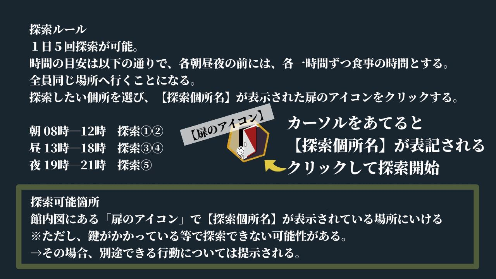

目次
目次ファイル
「▶」することで非表示になっている内容を確認できます。


探索ルールの詳細を確認
探索時間
１日５回、探索①～⑤時間に探索を行います。
朝 ８～１２時 探索①②
昼 １３～１８時 探索③④
夜 １９～２１時 探索⑤
基本的には、行った場所を探索するか、そこにいた人から話をきくか、のどちらかになります。3月29日は探索できません。実質上の時間切れエンディングとなります。
※３月２８日探索⑤のあとに真相を解くを選択することができます。
真相に行くための主な課題
封筒の送り主から求められたことは以下２つです。
・各客人の事件について、「誰」が「何」をしたのか
・アルメリアの花の目印はどこか
真相の解き明かし方
1日計6回（探索時間前後）表示される【真相アイコン】をクリックしてください。
※すべての探索が終了し、真相を語ることになります。
任意の選択ルール
●任意選択ルール１＊再ロール＊
技能失敗の場合、基本的には次の探索時間で再挑戦可能となります。
再挑戦の際に、１度目の経験を活かしたこととして、＋２０％補正をつけて振ることを任意選択ルールとします。（見知らぬ言語も書斎で辞書を発見し解読できたなどの判定）
●任意選択ルール２＊アイテムの持ち出し＊
アイテム（本や手帳など）について持ち主が生きている場合、基本的にはできません。
ただし、持ち主が不明、死亡している場合は可能です。その場合、持ち出したアイテムについて別の探索時間で再度技能ロールすることも可能です。
持ち出しを行い、本来とは異なる場所で成功した場合
本ファイルの目次から、持ち出した日時と場所を選択して確認するようにしてください。
探索をする
館内図の上に表示されている【扉のアイコン】があります。
カーソルをあてて、探索したい個所を選んでください。
※これはココフォリア上での探索手順です。このファイルでは表示されていません。
追加アイコンについて
館内図右上にある【解】と【繋】のアイコンはそれぞれのHO用のアイコンです。
【解】：解き明かすもの専用
【繋】：支え繋ぐもの専用
それぞれのHOの探索者たちがアイコンに記載された技能成功時に取得可能になります。情報の共有は自由です。